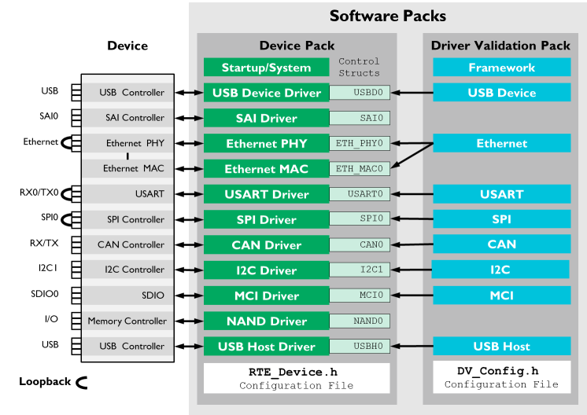

This manual explains the scope and the usage of the Software Pack for CMSIS-Driver Validation. CMSIS-Driver are standard peripheral API interfaces that connect microcontroller peripherals with middleware or the user application.
The Software Pack for CMSIS-Driver validation provides:
- Configurable validation tests for several CMSIS-Driver interfaces
- Example projects that show the usage of the CMSIS-Driver validation
The CMSIS-Driver Validation tests and verifies:
- API interface interaction using the driver capabilities as well as valid and invalid parameters.
- Data communication with various transfer sizes and communication parameters (i.e. baudrate).
- Loopback communication (for some interfaces) for testing the underlying hardware.
- Transfer speed of the data communication with time measurement of data transfers.
The CMSIS-Driver Validation requires CMSIS-RTOS or CMSIS-RTOS2 functionality and can be used to verify the setup and configuration of the CMSIS-Driver interfaces in a user system. It is also used to validate implementation of a CMSIS-Driver interface.
The diagram below is an overview of the configuration for CMSIS-Driver validation.

This manual contains the following chapters:
- Test Setup - Describes the general setup of the CMSIS-Driver validation test and how to generate test output.
- Reading Test Results - Explains how to interpret the test results from loopback tests.
- Examples - Contains information of several example projects including the required hardware setup.
- Resource Requirements - Lists memory and CMSIS-RTOS requirements.
- Reference - explains the individual tests for the various CMSIS-Driver interfaces.
The Software Pack for CMSIS-Driver validation current tests the following interfaces:
This manual assumes that you are familiar with MDK. Refer to MDK Version 5 - Getting Started for additional information.
Revision History
| Version | Description |
| V1.4.0 |
- Updated conditions to support all Cortex-M devices
- Introduced test groups (each driver is organized in a group)
- Improved XSL for XML display
- Updated all examples
- Removed example for Atmel board
- WiFi Driver Testing: Added SockServer application for PC running Microsoft Windows
- WiFi Driver Testing: Added upstream and downstream bandwidth testing
- WiFi Driver Testing: Added example for Inventek ISM43362 WiFi Driver testing on STMicroelectronics B-L475E-IOT01A1 board
- WiFi Driver Testing: Added example for Inventek ISM43362 WiFi Driver testing using ISMART43362-E WiFi shield mounted on NXP LPCXpresso55S69 board
- WiFi Driver Testing: Added examples for Espressif ESP8266 and ESP32 WiFi Driver testing with NXP MIMXRT1064-EVK board
- WiFi Driver Testing: Added example for WIZnet WizFi360 WiFi Driver testing with NXP MIMXRT1064-EVK board
|
| V1.3.0 |
|
| V1.2.0 |
- Added CMSIS-RTOS2 and Arm Compiler 6 compatibility
|
| V1.1.0 |
- Added USB Host, CAN and Ethernet Precision Time Protocol tests
|
| V1.0.0 |
- Initial release for CMSIS-Driver API V2.0
|